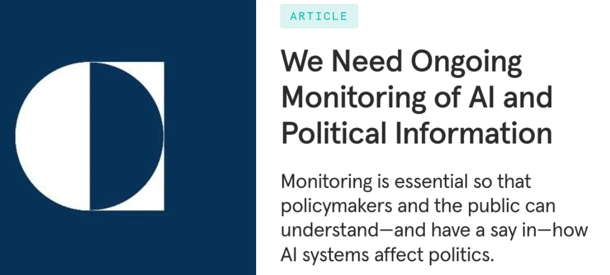
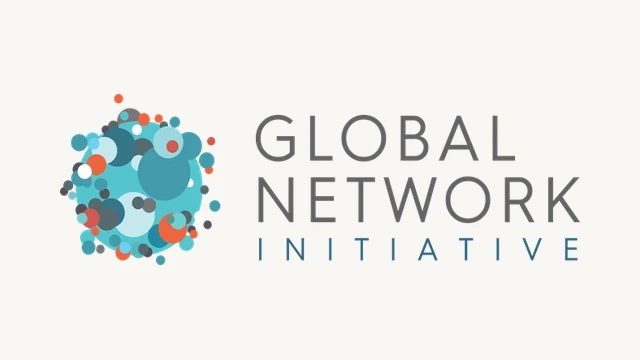
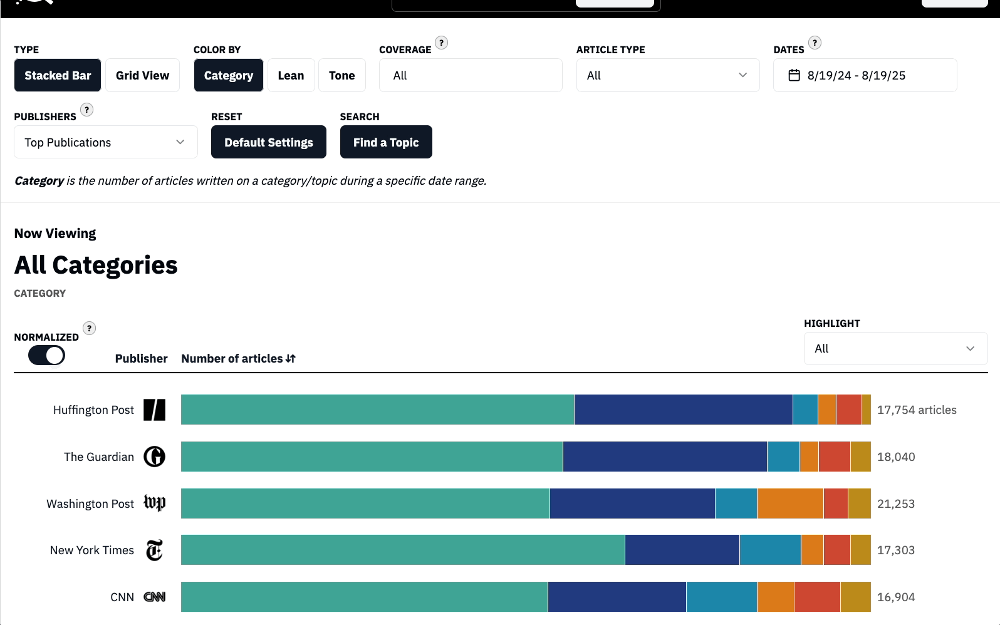

Penn MEDIATED

In a new Carnegie Endowment paper, Alex Engler and Danaé Metaxa argue for longitudinal monitoring to understand how LLMs impact politics.

Penn MEDIATED is delighted to announce our membership with the Global Network Initiative — a diverse community of institutions and experts working to advance a free and democratic technological future.
We are proud to welcome affiliated faculty across Penn's schools whose research explores how media and technology shape political attitudes and the information ecosystem.
Our redesigned research compendium is a one-stop shop for Penn research on the quantitative study of the information ecosystem.
We're excited to welcome three new Knight Fellows — Thomas Chamberlain, Jacky Liang, and Burak Ozturan — to Penn MEDIATED.
Penn MEDIATED faculty will contribute trainings to DFRLab's Digital Sherlocks program, informing practitioners on the front lines of information integrity.
Read an introduction from faculty co-directors Duncan Watts and Christopher Yoo.
From media bias and LLM outputs to civic discourse and information ecosystems, our research spans the full landscape of democratic health.
Explore All Research
The Penn Center on Media, Technology and Democracy (Penn MEDIATED) is committed to independent research on the information ecosystem and its impact on democracy.
Our mission is to advance our collective understanding of the information landscape through cutting-edge science—then leverage that research to foster a more informed society and strengthen the foundations of democracy.
Learn More About the CenterOur 25 affiliated faculty are distinguished by their rigorous empirical and computational research that advances the collective understanding of the information ecosystem.
Learn More About Our Affiliated Faculty